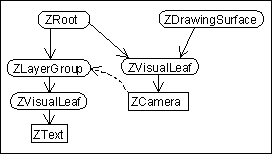

A scenegraph is a hierarchical data structure that is used to store the visual elements in the ZUI. Each visual element consists of two types of objects in the scenegraph: nodes and visual components. The ZVisualComponent is just a visual object that specifies the size of a visual element and how to render it. It cannot exist by itself in the scenegraph and, thus, is always associated with a node. The ZNode is responsible for maintaining the structure of the scenegraph and contains all characteristics (position, scale, transparency, etc.) that are passed on to child nodes.
In addition to visual elements that are represented in the ZUI, a properly formed scenegraph will also have exactly one root node (ZRoot) and one or more cameras (ZCamera). The root serves as a holder to all of the elements in the virtual universe that is being represented. The camera serves as a viewport into a portion of the scenegraph.

Run-time object structure in a typical application. This scene
contains a single camera looking onto a layer that contains a
rectangle and a group consisting of two polylines.
The hierarchy of the scenegraph encourages a natural spatial grouping of visual elements. Internal nodes act to group their children together passing on their object characteristics. This spatial grouping allows for efficient implementation of operations such as proximity detection, collision detection, and movement.
A visual element is represented by a ZVisualComponent object and is associated with a ZNode. The ZVisualComponent class is the base class for all other visual elements. Jazz provides several built-in visual elements:
Visual components are added to the scenegraph by attaching them to either a ZVisualLeaf, or a ZVisualGroup. These are each node types that accept visual components. ZVisualLeaf is a leaf node and does not have any other children. ZVisualGroup is a group node and maintains a list of child ZNodes. It accepts two visual components - a front one and a back one. The ZVisualGroup first renders the back visual component, then its children, and finally its front visual component.
Visual components can be shared in different parts of the scenegraph. The same visual component can be attached to multiple nodes. If this happens, then that visual component is rendered multiple times - once per node that it is attached to. If the visual component is modified or interacted with, then all references to that visual component are immediately updated.
ZNode is the base class for all nodes. Nodes are the basic element that forms the Jazz scenegraph structure. The ZNode class by itself does very little, but there are subclasses of it, each providing one bit of special functionality. Applications will typically chain together several node types to get the functionality they need. In this way, applications only pay for the features they need. In addition, Jazz is fundamentally extensible. If a new feature is needed, an application can create a new node type, and insert it into the tree.
Now, lets create the simplest Jazz application we can that creates a bit of text on the screen that lets you pan and zoom. We'll use ZCanvas, a basic Swing component that creates a minimal scenegraph with a root, a drawing surface, camera, and a layer. It also adds event handlers for simple pan and zoom navigation (which can be turned off).

The scenegraph created by the following application consists
of a camera looking at a node with some text
//
// Save this into the file 'HelloWorld.java', and compile it with
//
// javac HelloWorld.java OR
// javac -classpath "./jazz.jar" HelloWorld.java (to explicitly set out your path)
//
// and run it with
//
// java HelloWorld OR
// java -cp "./;jazz.jar" HelloWorld (to explicitly set out your path)
//
// Be sure to set your CLASSPATH environment variable to include
// jazz.jar. The jazz.jar file is located in the root directory of the
// Jazz binary distribution. If you have the Jazz source distribution see
// the build.xml file in the root directory for build instructions.
//
import java.awt.event.*;
import javax.swing.*;
import edu.umd.cs.jazz.*;
import edu.umd.cs.jazz.util.*;
import edu.umd.cs.jazz.component.*;
public class HelloWorld extends JFrame {
public HelloWorld() {
// Support exiting application
addWindowListener(new WindowAdapter() {
public void windowClosing(WindowEvent e) {
System.exit(0);
}
});
// Set up basic frame
setBounds(100, 100, 400, 400);
setVisible(true);
ZCanvas canvas = new ZCanvas();
getContentPane().add(canvas);
validate();
// Add some sample text
ZText text = new ZText("Hello World!");
ZVisualLeaf leaf = new ZVisualLeaf(text);
canvas.getLayer().addChild(leaf);
}
public static void main(String args[]) {
HelloWorld app = new HelloWorld();
}
}
This program extends JFrame which creates a top-level window. The two sections of code are standard java code to create a window. The first bit exits the application if the window is closed. The second bit sets the bounds of the frame, and makes it visible, and then makes a Jazz ZCanvas, and adds it to the window.
Finally, the main Jazz-specific code is the last three lines of the constructor. This first creates a new text visual component. Then, it creates a leaf node that renders that text. Finally, it adds the leaf node to the canvas. Jazz takes care of repainting the scene when it is modified, and the canvas has default navigation event handlers, so that's it.
To try out this program, compile and run it according to the comment in the header. Then, when it comes up and you can see "Hello World", click and drag with the left button, and you can pan the scene (i.e., drag left/right, up/down). If you click the right button and drag left or right, you can zoom out/in, respectively.